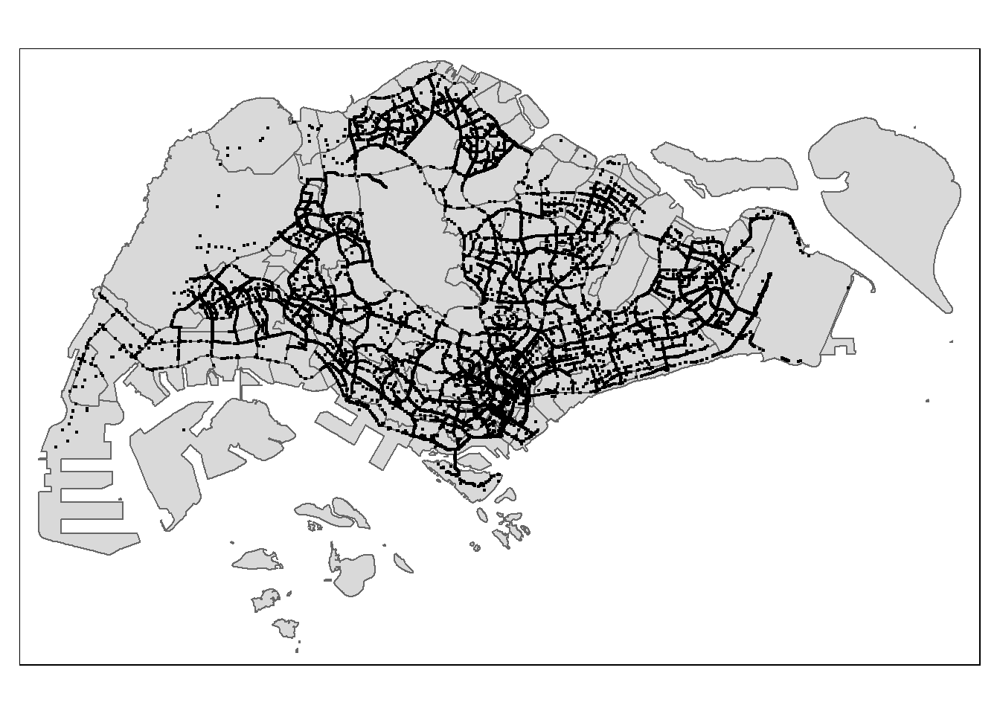

install.packages("maptools", repos = "https://packagemanager.posit.co/cran/2023-10-13")Take-home Exercise 1: Application of Spatial Point Patterns Analysis to discover the geographical distribution of Grab hailing services in Singapore
Setting the Scene
Human mobility, the movement of human beings in space and time, reflects the spatial-temporal characteristics of human behavior. With the advancement Information and Communication Technologies (ICT) especially smart phone, a large volume of data related to human mobility have been collected. By using appropriate GIS analysis methods, these data are potentially useful in supporting smart city planning and management.
In Singapore, one of the important source of data related to human mobility is from Land Transport Authority (LTA) DataMall. Two data sets related to human mobility are provided by the portal, they are: Passenger Volume by Origin Destination Train Stations and Passenger Volume by Origin Destination Bus Stops. One of the limitation of these data sets is that their location are biased to either bus stops or MRT/LRT stations. In 2020, another very interesting human mobility data set called Grab Posisi was released by GRAB, one of the largest shared taxi operator in South-east Asia. There are two data sets been released and one of them is for Singapore.
Objectives
Geospatial analytics hold tremendous potential to address complex problems facing society. In this study, you are tasked to apply appropriate spatial point patterns analysis methods to discover the geographical and spatio-temporal distribution of Grab hailing services locations in Singapore.
1 Install maptools
Installing the required tools for the analysis (e.g. sf, tidyverse, maptools, etc)
pacman::p_load(maptools, sf, raster, spatstat, tmap, tidyverse, arrow, lubridate, dplyr, spNetwork)2 Data Import and Wrangling
This is where we import the data and prepare it before analysis``.
Let’s use st_read() of sf package to import these three geospatial data sets into R. And we will be using other functions to prepare our data upon importing them.
The 3 data are:
Grab Taxi location points (Grab-Posisi)
Road layer within SG (Geofabrik download server) [Malaysia, Singapore, and Brunei coverage]
SG Boundary (data.gov.sg) [Master Plan 2019 Subzone Boundary (No Sea)]
2.1 Grab Taxi lcoation points (grab_df)
Let’s use read_parquet() function to read the grab parquet file, and import it into grab_df
# Check if the data is already loaded
if (!exists("road_sf")) {
# Import data if not loaded
grab_df <- read_parquet("data/aspatial/GrabPosisi/part-00000-8bbff892-97d2-4011-9961-703e38972569.c000.snappy - Copy.parquet")
}Convert the timestamp for grab_df
grab_df$pingtimestamp <- as_datetime(grab_df$pingtimestamp)Let’s take a glimpse of our grab_df data
glimpse(grab_df)Rows: 3,034,553
Columns: 9
$ trj_id <chr> "70014", "73573", "75567", "1410", "4354", "32630", "646…
$ driving_mode <chr> "car", "car", "car", "car", "car", "car", "car", "car", …
$ osname <chr> "android", "android", "android", "android", "android", "…
$ pingtimestamp <dttm> 2019-04-11 00:40:36, 2019-04-18 10:17:03, 2019-04-13 07…
$ rawlat <dbl> 1.342326, 1.321781, 1.327088, 1.262482, 1.283799, 1.3003…
$ rawlng <dbl> 103.8890, 103.8564, 103.8613, 103.8238, 103.8072, 103.90…
$ speed <dbl> 18.910000, 17.719076, 14.021548, 13.026521, 14.812943, 2…
$ bearing <int> 248, 44, 34, 181, 93, 73, 82, 321, 324, 31, 203, 50, 252…
$ accuracy <dbl> 3.900, 4.000, 3.900, 4.000, 3.900, 3.900, 3.000, 3.649, …Save the data into grab_rds
write_rds(grab_df, "data/rds/grab.rds")Extracting trip starting locations (origin_df)
origin_df <- grab_df %>% group_by(trj_id) %>% arrange(pingtimestamp) %>% filter(row_number()==1) %>% mutate(weekday = wday(pingtimestamp, label=TRUE, abbr=TRUE), start_hr = factor(hour(pingtimestamp)), day = factor(mday(pingtimestamp)))Extracting trip ending locations (destination_df)
destination_df <- grab_df %>% group_by(trj_id) %>% arrange(desc(pingtimestamp)) %>% filter(row_number()==1) %>% mutate(weekday = wday(pingtimestamp, label=TRUE, abbr=TRUE), end_hr = factor(hour(pingtimestamp)), day = factor(mday(pingtimestamp)))Let’s save a copy of both origin_df and destination_df into the rds folder
write_rds(origin_df, "data/rds/origin_df.rds")
write_rds(destination_df, "data/rds/destination_df.rds")Let’s convert the grab_df from aspatial data into geospatial data
origin_sf <- st_as_sf(origin_df, coords = c("rawlng", "rawlat"), crs = 4326) %>%
st_transform(crs = 3414)
destination_sf <- st_as_sf(destination_df, coords = c("rawlng", "rawlat"), crs = 4326) %>%
st_transform(crs = 3414)Let’s check the referencing system info of this road_df
st_crs(origin_sf)Coordinate Reference System:
User input: EPSG:3414
wkt:
PROJCRS["SVY21 / Singapore TM",
BASEGEOGCRS["SVY21",
DATUM["SVY21",
ELLIPSOID["WGS 84",6378137,298.257223563,
LENGTHUNIT["metre",1]]],
PRIMEM["Greenwich",0,
ANGLEUNIT["degree",0.0174532925199433]],
ID["EPSG",4757]],
CONVERSION["Singapore Transverse Mercator",
METHOD["Transverse Mercator",
ID["EPSG",9807]],
PARAMETER["Latitude of natural origin",1.36666666666667,
ANGLEUNIT["degree",0.0174532925199433],
ID["EPSG",8801]],
PARAMETER["Longitude of natural origin",103.833333333333,
ANGLEUNIT["degree",0.0174532925199433],
ID["EPSG",8802]],
PARAMETER["Scale factor at natural origin",1,
SCALEUNIT["unity",1],
ID["EPSG",8805]],
PARAMETER["False easting",28001.642,
LENGTHUNIT["metre",1],
ID["EPSG",8806]],
PARAMETER["False northing",38744.572,
LENGTHUNIT["metre",1],
ID["EPSG",8807]]],
CS[Cartesian,2],
AXIS["northing (N)",north,
ORDER[1],
LENGTHUNIT["metre",1]],
AXIS["easting (E)",east,
ORDER[2],
LENGTHUNIT["metre",1]],
USAGE[
SCOPE["Cadastre, engineering survey, topographic mapping."],
AREA["Singapore - onshore and offshore."],
BBOX[1.13,103.59,1.47,104.07]],
ID["EPSG",3414]]Since it is in SVY21 format, we will standardise the crs
origin_sf <- st_transform(origin_sf, crs= 3414)
destination_sf <- st_transform(destination_sf, crs= 3414)
st_crs(origin_sf)Coordinate Reference System:
User input: EPSG:3414
wkt:
PROJCRS["SVY21 / Singapore TM",
BASEGEOGCRS["SVY21",
DATUM["SVY21",
ELLIPSOID["WGS 84",6378137,298.257223563,
LENGTHUNIT["metre",1]]],
PRIMEM["Greenwich",0,
ANGLEUNIT["degree",0.0174532925199433]],
ID["EPSG",4757]],
CONVERSION["Singapore Transverse Mercator",
METHOD["Transverse Mercator",
ID["EPSG",9807]],
PARAMETER["Latitude of natural origin",1.36666666666667,
ANGLEUNIT["degree",0.0174532925199433],
ID["EPSG",8801]],
PARAMETER["Longitude of natural origin",103.833333333333,
ANGLEUNIT["degree",0.0174532925199433],
ID["EPSG",8802]],
PARAMETER["Scale factor at natural origin",1,
SCALEUNIT["unity",1],
ID["EPSG",8805]],
PARAMETER["False easting",28001.642,
LENGTHUNIT["metre",1],
ID["EPSG",8806]],
PARAMETER["False northing",38744.572,
LENGTHUNIT["metre",1],
ID["EPSG",8807]]],
CS[Cartesian,2],
AXIS["northing (N)",north,
ORDER[1],
LENGTHUNIT["metre",1]],
AXIS["easting (E)",east,
ORDER[2],
LENGTHUNIT["metre",1]],
USAGE[
SCOPE["Cadastre, engineering survey, topographic mapping."],
AREA["Singapore - onshore and offshore."],
BBOX[1.13,103.59,1.47,104.07]],
ID["EPSG",3414]]Let’s visualise how grab_df looked like by using the trips’ origin locations
tmap_mode("plot")
tm_shape(origin_sf) +
tm_dots()
Let’s visualise how grab_df looked like by using the trips’ destination locations
tmap_mode("plot")
tm_shape(destination_sf) +
tm_dots()2.2 Road layer within SG (road_sf)
Let’s use st_read() function to read the roads file, and import it into road_df
# Check if the data is already loaded
if (!exists("road_sf")) {
# Import data if not loaded
road_sf <- st_read(dsn = "data/geospatial/malaysia-singapore-brunei-latest-free.shp", layer = "gis_osm_roads_free_1")
}Reading layer `gis_osm_roads_free_1' from data source
`C:\glimjw\IS415-GAA\Take-home_Ex\Take-home_Ex01\data\geospatial\malaysia-singapore-brunei-latest-free.shp'
using driver `ESRI Shapefile'
Simple feature collection with 1767027 features and 10 fields
Geometry type: LINESTRING
Dimension: XY
Bounding box: xmin: 99.66041 ymin: 0.8021131 xmax: 119.2601 ymax: 7.514393
Geodetic CRS: WGS 84Let’s check the referencing system info of this road_df
st_crs(road_sf)Coordinate Reference System:
User input: WGS 84
wkt:
GEOGCRS["WGS 84",
DATUM["World Geodetic System 1984",
ELLIPSOID["WGS 84",6378137,298.257223563,
LENGTHUNIT["metre",1]]],
PRIMEM["Greenwich",0,
ANGLEUNIT["degree",0.0174532925199433]],
CS[ellipsoidal,2],
AXIS["latitude",north,
ORDER[1],
ANGLEUNIT["degree",0.0174532925199433]],
AXIS["longitude",east,
ORDER[2],
ANGLEUNIT["degree",0.0174532925199433]],
ID["EPSG",4326]]We want to extract the roads that are in Singapore as road_sf carries the road data of Malaysia and Brunei.
# Define the bounding box for Singapore
singapore_bbox <- st_bbox(c(xmin = 103, xmax = 104, ymin = 1.15, ymax = 1.47), crs = 4326)
# Crop roads within the bounding box
road_sg_sf <- st_crop(road_sf, st_as_sfc(st_bbox(singapore_bbox)))
# Print the resulting dataset
print(road_sg_sf)Simple feature collection with 249223 features and 10 fields
Geometry type: GEOMETRY
Dimension: XY
Bounding box: xmin: 103.2563 ymin: 1.160081 xmax: 104 ymax: 1.470056
Geodetic CRS: WGS 84
First 10 features:
osm_id code fclass name ref oneway maxspeed layer
1 4386520 5113 primary Orchard Road <NA> F 50 0
18 4887867 5122 residential Hougang Avenue 1 <NA> B 50 0
497 8096835 5113 primary Scotts Road <NA> F 60 0
505 9584642 5115 tertiary Keng Lee Road <NA> F 50 0
506 9584847 5153 footway <NA> <NA> B 0 0
507 9585045 5113 primary Newton Road <NA> F 60 0
508 9585074 5122 residential Sarkies Road <NA> B 50 0
509 9585621 5113 primary Paterson Road <NA> F 50 0
510 9585771 5113 primary Orchard Boulevard <NA> F 50 0
511 9586040 5113 primary Paterson Road <NA> F 50 0
bridge tunnel geometry
1 F F LINESTRING (103.8301 1.3060...
18 F F LINESTRING (103.8874 1.3489...
497 F F LINESTRING (103.8386 1.3125...
505 F F LINESTRING (103.8438 1.3137...
506 F F LINESTRING (103.8408 1.3146...
507 F F LINESTRING (103.8393 1.3134...
508 F F LINESTRING (103.8372 1.3146...
509 F F LINESTRING (103.8318 1.3050...
510 F F LINESTRING (103.8348 1.3004...
511 F F LINESTRING (103.8305 1.3032...Since it is in WGS 84 format, we will standardise the crs
road_sg_sf <- st_transform(road_sg_sf, crs= 3414)
st_crs(road_sg_sf)Coordinate Reference System:
User input: EPSG:3414
wkt:
PROJCRS["SVY21 / Singapore TM",
BASEGEOGCRS["SVY21",
DATUM["SVY21",
ELLIPSOID["WGS 84",6378137,298.257223563,
LENGTHUNIT["metre",1]]],
PRIMEM["Greenwich",0,
ANGLEUNIT["degree",0.0174532925199433]],
ID["EPSG",4757]],
CONVERSION["Singapore Transverse Mercator",
METHOD["Transverse Mercator",
ID["EPSG",9807]],
PARAMETER["Latitude of natural origin",1.36666666666667,
ANGLEUNIT["degree",0.0174532925199433],
ID["EPSG",8801]],
PARAMETER["Longitude of natural origin",103.833333333333,
ANGLEUNIT["degree",0.0174532925199433],
ID["EPSG",8802]],
PARAMETER["Scale factor at natural origin",1,
SCALEUNIT["unity",1],
ID["EPSG",8805]],
PARAMETER["False easting",28001.642,
LENGTHUNIT["metre",1],
ID["EPSG",8806]],
PARAMETER["False northing",38744.572,
LENGTHUNIT["metre",1],
ID["EPSG",8807]]],
CS[Cartesian,2],
AXIS["northing (N)",north,
ORDER[1],
LENGTHUNIT["metre",1]],
AXIS["easting (E)",east,
ORDER[2],
LENGTHUNIT["metre",1]],
USAGE[
SCOPE["Cadastre, engineering survey, topographic mapping."],
AREA["Singapore - onshore and offshore."],
BBOX[1.13,103.59,1.47,104.07]],
ID["EPSG",3414]]2.3 SG Boundary (mpsz_sf)
Let’s use st_read() function to read the Master Plan Subzone Boundary file, and import it into mpsz_sf
# Check if the data is already loaded
if (!exists("mpsz_sf")) {
# Import data if not loaded
mpsz_sf <- st_read(dsn = "data/geospatial/MPSZ-2019", layer = "MPSZ-2019")
}Reading layer `MPSZ-2019' from data source
`C:\glimjw\IS415-GAA\Take-home_Ex\Take-home_Ex01\data\geospatial\MPSZ-2019'
using driver `ESRI Shapefile'
Simple feature collection with 332 features and 6 fields
Geometry type: MULTIPOLYGON
Dimension: XY
Bounding box: xmin: 103.6057 ymin: 1.158699 xmax: 104.0885 ymax: 1.470775
Geodetic CRS: WGS 84Let’s check the referencing system info of this mpsz_sf
st_crs(mpsz_sf)Coordinate Reference System:
User input: WGS 84
wkt:
GEOGCRS["WGS 84",
DATUM["World Geodetic System 1984",
ELLIPSOID["WGS 84",6378137,298.257223563,
LENGTHUNIT["metre",1]]],
PRIMEM["Greenwich",0,
ANGLEUNIT["degree",0.0174532925199433]],
CS[ellipsoidal,2],
AXIS["latitude",north,
ORDER[1],
ANGLEUNIT["degree",0.0174532925199433]],
AXIS["longitude",east,
ORDER[2],
ANGLEUNIT["degree",0.0174532925199433]],
ID["EPSG",4326]]Since it is in WGS 84 format, we will standardise the crs
mpsz_sf <- st_transform(mpsz_sf, crs= 3414)
st_crs(mpsz_sf)Coordinate Reference System:
User input: EPSG:3414
wkt:
PROJCRS["SVY21 / Singapore TM",
BASEGEOGCRS["SVY21",
DATUM["SVY21",
ELLIPSOID["WGS 84",6378137,298.257223563,
LENGTHUNIT["metre",1]]],
PRIMEM["Greenwich",0,
ANGLEUNIT["degree",0.0174532925199433]],
ID["EPSG",4757]],
CONVERSION["Singapore Transverse Mercator",
METHOD["Transverse Mercator",
ID["EPSG",9807]],
PARAMETER["Latitude of natural origin",1.36666666666667,
ANGLEUNIT["degree",0.0174532925199433],
ID["EPSG",8801]],
PARAMETER["Longitude of natural origin",103.833333333333,
ANGLEUNIT["degree",0.0174532925199433],
ID["EPSG",8802]],
PARAMETER["Scale factor at natural origin",1,
SCALEUNIT["unity",1],
ID["EPSG",8805]],
PARAMETER["False easting",28001.642,
LENGTHUNIT["metre",1],
ID["EPSG",8806]],
PARAMETER["False northing",38744.572,
LENGTHUNIT["metre",1],
ID["EPSG",8807]]],
CS[Cartesian,2],
AXIS["northing (N)",north,
ORDER[1],
LENGTHUNIT["metre",1]],
AXIS["easting (E)",east,
ORDER[2],
LENGTHUNIT["metre",1]],
USAGE[
SCOPE["Cadastre, engineering survey, topographic mapping."],
AREA["Singapore - onshore and offshore."],
BBOX[1.13,103.59,1.47,104.07]],
ID["EPSG",3414]]Let’s plot mpsz to see how it looks like
# Set tmap mode to plotting
tmap_mode("plot")
# Plot the map
tm_shape(mpsz_sf) +
tm_borders() +
tm_layout(frame = FALSE) +
tm_basemap(server = "Stamen.TonerLite") +
tm_shape(mpsz_sf) +
tm_borders(lwd = 0.5) +
tm_layout(legend.show = FALSE) Now, let’s combine both mpsz_sf and origin_sf
tm_shape(mpsz_sf) +
tm_polygons() +
tm_shape(origin_sf) +
tm_dots()
2.4 Convert our sf data frames to sp’s spatial* class
Convert origin_sf to sp’s spatial* class
origin <- as_Spatial(origin_sf)
mpsz <- as_Spatial(mpsz_sf)2.5 Convert our spatial* class into sp format
Convert origin and mpsz to sp format
origin_sp <- as(origin, "SpatialPoints")
mpsz_sp <- as(mpsz, "SpatialPolygons")2.6 Convert our sp format into ppp
Convert origin_sp to ppp format
library(spatstat)
# Assuming origin_sp is a SpatialPoints object
coords <- coordinates(origin_sp)
# Create a rectangular window covering the entire extent of the points
window <- owin(xrange = range(coords[, 1]), yrange = range(coords[, 2]))
# Create a ppp object with the adjusted window
origin_ppp <- ppp(coords[, 1], coords[, 2], window = window)
origin_pppPlanar point pattern: 28000 points
window: rectangle = [3661.47, 49845.23] x [25201.14, 49685.08] unitsplot(origin_ppp)
2.7 Creating the owin object
mpsz_owin <- as.owin(mpsz_sp) Let’s plot the new owin
plot(mpsz_owin)summary(mpsz_owin)Window: polygonal boundary
387 separate polygons (13 holes)
vertices area relative.area
polygon 1 299 1.84404e+06 2.35e-03
polygon 2 165 3.92563e+05 5.00e-04
polygon 3 239 5.06589e+05 6.46e-04
polygon 4 1265 3.29427e+07 4.20e-02
polygon 5 (hole) 3 -3.79135e-02 -4.83e-11
polygon 6 487 2.06117e+06 2.63e-03
polygon 7 264 1.50631e+06 1.92e-03
polygon 8 65 8.42861e+04 1.07e-04
polygon 9 47 3.82087e+04 4.87e-05
polygon 10 22 6.74651e+03 8.60e-06
polygon 11 133 3.88733e+05 4.95e-04
polygon 12 255 1.59034e+06 2.03e-03
polygon 13 234 2.08755e+06 2.66e-03
polygon 14 227 1.10308e+06 1.41e-03
polygon 15 145 9.61782e+05 1.23e-03
polygon 16 19 3.09221e+04 3.94e-05
polygon 17 37 1.29481e+04 1.65e-05
polygon 18 10 6.60195e+03 8.41e-06
polygon 19 30 4.28933e+03 5.47e-06
polygon 20 4 9.47108e+01 1.21e-07
polygon 21 1045 4.44510e+06 5.66e-03
polygon 22 (hole) 13 -3.91907e+02 -4.99e-07
polygon 23 232 4.72886e+05 6.03e-04
polygon 24 15 4.03300e+04 5.14e-05
polygon 25 14 5.86546e+03 7.47e-06
polygon 26 1020 1.27781e+06 1.63e-03
polygon 27 (hole) 7 -6.28298e-05 -8.01e-14
polygon 28 (hole) 3 -3.23305e-04 -4.12e-13
polygon 29 (hole) 3 -1.20875e-01 -1.54e-10
polygon 30 (hole) 12 -5.81913e-01 -7.41e-10
polygon 31 (hole) 4 -6.55702e-01 -8.36e-10
polygon 32 211 4.70521e+05 6.00e-04
polygon 33 155 2.67502e+05 3.41e-04
polygon 34 129 9.53761e+04 1.22e-04
polygon 35 94 5.96187e+04 7.60e-05
polygon 36 59 3.43150e+04 4.37e-05
polygon 37 10 4.90942e+02 6.26e-07
polygon 38 6 4.50259e+02 5.74e-07
polygon 39 4 2.69313e+02 3.43e-07
polygon 40 1432 4.87153e+06 6.21e-03
polygon 41 (hole) 4 -1.72650e-04 -2.20e-13
polygon 42 (hole) 3 -2.33435e-03 -2.97e-12
polygon 43 (hole) 3 -1.37223e-02 -1.75e-11
polygon 44 (hole) 11 -8.36705e+01 -1.07e-07
polygon 45 75 1.73526e+04 2.21e-05
polygon 46 40 1.38607e+04 1.77e-05
polygon 47 83 5.28920e+03 6.74e-06
polygon 48 139 3.22293e+03 4.11e-06
polygon 49 148 3.10395e+03 3.96e-06
polygon 50 106 3.04104e+03 3.88e-06
polygon 51 45 2.51218e+03 3.20e-06
polygon 52 442 3.45157e+06 4.40e-03
polygon 53 84 1.03238e+05 1.32e-04
polygon 54 102 1.12730e+06 1.44e-03
polygon 55 1179 2.69866e+06 3.44e-03
polygon 56 88 5.33463e+05 6.80e-04
polygon 57 95 1.45519e+05 1.85e-04
polygon 58 55 6.35704e+05 8.10e-04
polygon 59 53 2.76827e+05 3.53e-04
polygon 60 114 6.36650e+04 8.11e-05
polygon 61 83 1.96620e+05 2.51e-04
polygon 62 33 3.65333e+05 4.66e-04
polygon 63 110 1.45503e+06 1.85e-03
polygon 64 135 8.53207e+05 1.09e-03
polygon 65 196 1.07072e+06 1.36e-03
polygon 66 47 5.33013e+05 6.79e-04
polygon 67 85 4.42298e+05 5.64e-04
polygon 68 38 4.11723e+05 5.25e-04
polygon 69 227 5.87223e+05 7.48e-04
polygon 70 35 3.94379e+04 5.03e-05
polygon 71 96 1.88767e+05 2.41e-04
polygon 72 59 1.33007e+05 1.69e-04
polygon 73 47 4.48128e+05 5.71e-04
polygon 74 31 5.21201e+05 6.64e-04
polygon 75 17 3.50788e+05 4.47e-04
polygon 76 54 2.61844e+05 3.34e-04
polygon 77 152 1.63038e+06 2.08e-03
polygon 78 181 5.61609e+05 7.16e-04
polygon 79 47 1.60807e+05 2.05e-04
polygon 80 49 5.95247e+05 7.58e-04
polygon 81 49 3.87612e+05 4.94e-04
polygon 82 59 1.03038e+06 1.31e-03
polygon 83 83 5.51732e+05 7.03e-04
polygon 84 69 2.90185e+05 3.70e-04
polygon 85 217 1.08479e+06 1.38e-03
polygon 86 41 6.28893e+05 8.01e-04
polygon 87 226 1.82685e+06 2.33e-03
polygon 88 56 2.93695e+05 3.74e-04
polygon 89 256 5.57276e+05 7.10e-04
polygon 90 48 5.56813e+04 7.10e-05
polygon 91 60 1.16330e+05 1.48e-04
polygon 92 352 2.00345e+06 2.55e-03
polygon 93 129 2.43459e+06 3.10e-03
polygon 94 59 3.10534e+05 3.96e-04
polygon 95 114 1.38034e+06 1.76e-03
polygon 96 134 1.95176e+06 2.49e-03
polygon 97 270 4.51538e+05 5.75e-04
polygon 98 80 6.97502e+05 8.89e-04
polygon 99 124 1.72655e+05 2.20e-04
polygon 100 277 1.09783e+06 1.40e-03
polygon 101 137 1.05800e+06 1.35e-03
polygon 102 313 2.79680e+06 3.56e-03
polygon 103 496 3.05099e+06 3.89e-03
polygon 104 139 3.36221e+05 4.28e-04
polygon 105 62 7.42203e+05 9.46e-04
polygon 106 114 1.07899e+06 1.37e-03
polygon 107 322 4.60550e+05 5.87e-04
polygon 108 198 5.43484e+05 6.93e-04
polygon 109 51 2.78304e+05 3.55e-04
polygon 110 694 1.77060e+06 2.26e-03
polygon 111 297 8.86955e+05 1.13e-03
polygon 112 182 2.18808e+05 2.79e-04
polygon 113 130 2.00787e+05 2.56e-04
polygon 114 169 7.10569e+05 9.05e-04
polygon 115 34 7.48684e+05 9.54e-04
polygon 116 173 3.68483e+05 4.70e-04
polygon 117 298 7.60621e+06 9.69e-03
polygon 118 239 2.21998e+05 2.83e-04
polygon 119 130 2.80175e+05 3.57e-04
polygon 120 141 2.14250e+05 2.73e-04
polygon 121 83 1.73122e+05 2.21e-04
polygon 122 192 5.91779e+05 7.54e-04
polygon 123 174 1.75348e+06 2.23e-03
polygon 124 193 3.40743e+05 4.34e-04
polygon 125 219 3.29438e+05 4.20e-04
polygon 126 88 1.70664e+05 2.17e-04
polygon 127 218 1.34616e+06 1.72e-03
polygon 128 27 1.71334e+05 2.18e-04
polygon 129 84 4.96260e+04 6.32e-05
polygon 130 199 1.93992e+05 2.47e-04
polygon 131 77 1.20171e+05 1.53e-04
polygon 132 273 6.14924e+05 7.84e-04
polygon 133 108 1.02656e+06 1.31e-03
polygon 134 154 1.67537e+05 2.13e-04
polygon 135 81 1.16002e+06 1.48e-03
polygon 136 92 2.34938e+06 2.99e-03
polygon 137 86 9.63495e+05 1.23e-03
polygon 138 35 4.85022e+05 6.18e-04
polygon 139 82 1.88131e+06 2.40e-03
polygon 140 103 1.42508e+06 1.82e-03
polygon 141 60 2.38728e+06 3.04e-03
polygon 142 74 1.22989e+06 1.57e-03
polygon 143 123 9.63925e+05 1.23e-03
polygon 144 75 1.26341e+06 1.61e-03
polygon 145 50 3.69771e+05 4.71e-04
polygon 146 83 3.20366e+06 4.08e-03
polygon 147 96 1.10727e+06 1.41e-03
polygon 148 43 5.54624e+05 7.07e-04
polygon 149 126 3.38724e+06 4.32e-03
polygon 150 94 1.87800e+06 2.39e-03
polygon 151 40 8.67750e+05 1.11e-03
polygon 152 55 6.39144e+05 8.14e-04
polygon 153 39 3.26015e+06 4.15e-03
polygon 154 54 4.11404e+05 5.24e-04
polygon 155 75 4.18657e+05 5.33e-04
polygon 156 104 2.09818e+06 2.67e-03
polygon 157 91 1.52455e+06 1.94e-03
polygon 158 74 2.18107e+05 2.78e-04
polygon 159 105 2.13519e+05 2.72e-04
polygon 160 215 2.47266e+06 3.15e-03
polygon 161 (hole) 38 -7.79904e+03 -9.94e-06
polygon 162 4 1.41753e-02 1.81e-11
polygon 163 608 1.94141e+06 2.47e-03
polygon 164 325 2.12118e+06 2.70e-03
polygon 165 119 4.85572e+05 6.19e-04
polygon 166 102 7.56926e+05 9.65e-04
polygon 167 118 3.51305e+05 4.48e-04
polygon 168 69 1.31292e+06 1.67e-03
polygon 169 67 9.47453e+05 1.21e-03
polygon 170 100 7.49199e+05 9.55e-04
polygon 171 93 1.05203e+06 1.34e-03
polygon 172 92 4.10939e+05 5.24e-04
polygon 173 72 8.39679e+05 1.07e-03
polygon 174 184 1.22706e+06 1.56e-03
polygon 175 120 5.58761e+05 7.12e-04
polygon 176 212 2.09609e+06 2.67e-03
polygon 177 88 7.22589e+05 9.21e-04
polygon 178 281 2.55046e+06 3.25e-03
polygon 179 34 2.04263e+06 2.60e-03
polygon 180 70 3.26040e+06 4.15e-03
polygon 181 119 2.15829e+06 2.75e-03
polygon 182 140 1.34746e+06 1.72e-03
polygon 183 60 2.33891e+06 2.98e-03
polygon 184 111 4.29714e+06 5.48e-03
polygon 185 110 9.91057e+05 1.26e-03
polygon 186 383 2.03851e+06 2.60e-03
polygon 187 125 2.57843e+06 3.29e-03
polygon 188 91 3.18758e+06 4.06e-03
polygon 189 35 2.56100e+06 3.26e-03
polygon 190 112 7.35502e+05 9.37e-04
polygon 191 124 9.48159e+05 1.21e-03
polygon 192 132 1.31911e+06 1.68e-03
polygon 193 60 2.99731e+06 3.82e-03
polygon 194 122 1.37683e+06 1.75e-03
polygon 195 129 1.92662e+06 2.45e-03
polygon 196 374 4.13716e+06 5.27e-03
polygon 197 79 1.06189e+06 1.35e-03
polygon 198 75 1.79446e+06 2.29e-03
polygon 199 101 3.47525e+06 4.43e-03
polygon 200 94 1.23166e+06 1.57e-03
polygon 201 237 1.97413e+06 2.52e-03
polygon 202 132 1.77073e+06 2.26e-03
polygon 203 210 1.78725e+05 2.28e-04
polygon 204 91 1.49663e+04 1.91e-05
polygon 205 71 8.18750e+03 1.04e-05
polygon 206 84 2.25924e+06 2.88e-03
polygon 207 58 8.59179e+05 1.09e-03
polygon 208 71 1.94861e+06 2.48e-03
polygon 209 87 1.07862e+06 1.37e-03
polygon 210 151 3.02315e+06 3.85e-03
polygon 211 35 4.41733e+05 5.63e-04
polygon 212 60 9.72128e+05 1.24e-03
polygon 213 94 1.23590e+06 1.57e-03
polygon 214 101 1.63984e+06 2.09e-03
polygon 215 107 2.54311e+06 3.24e-03
polygon 216 83 9.55710e+05 1.22e-03
polygon 217 58 3.16882e+05 4.04e-04
polygon 218 94 1.04642e+06 1.33e-03
polygon 219 63 9.21431e+05 1.17e-03
polygon 220 57 2.39334e+06 3.05e-03
polygon 221 52 6.84704e+05 8.72e-04
polygon 222 159 1.08508e+06 1.38e-03
polygon 223 44 1.97494e+06 2.52e-03
polygon 224 141 4.14132e+06 5.28e-03
polygon 225 159 4.34375e+06 5.53e-03
polygon 226 59 1.51553e+06 1.93e-03
polygon 227 60 9.44998e+05 1.20e-03
polygon 228 191 1.99363e+06 2.54e-03
polygon 229 113 2.07797e+06 2.65e-03
polygon 230 136 3.14493e+06 4.01e-03
polygon 231 195 2.63648e+06 3.36e-03
polygon 232 80 1.05717e+06 1.35e-03
polygon 233 56 1.28795e+06 1.64e-03
polygon 234 69 4.39647e+05 5.60e-04
polygon 235 50 7.46882e+05 9.52e-04
polygon 236 61 4.46242e+05 5.69e-04
polygon 237 72 5.72502e+05 7.30e-04
polygon 238 79 8.13383e+05 1.04e-03
polygon 239 94 1.48430e+06 1.89e-03
polygon 240 342 1.97707e+06 2.52e-03
polygon 241 97 1.03728e+06 1.32e-03
polygon 242 167 2.82095e+06 3.59e-03
polygon 243 56 9.24763e+05 1.18e-03
polygon 244 119 1.80638e+06 2.30e-03
polygon 245 64 1.40454e+06 1.79e-03
polygon 246 91 2.37933e+06 3.03e-03
polygon 247 182 2.77330e+06 3.53e-03
polygon 248 131 3.46851e+06 4.42e-03
polygon 249 452 7.65582e+06 9.76e-03
polygon 250 108 2.77750e+06 3.54e-03
polygon 251 40 9.06317e+05 1.15e-03
polygon 252 41 3.80202e+05 4.84e-04
polygon 253 82 5.27472e+05 6.72e-04
polygon 254 77 8.00299e+05 1.02e-03
polygon 255 147 8.98555e+05 1.14e-03
polygon 256 154 1.79616e+06 2.29e-03
polygon 257 130 2.25124e+06 2.87e-03
polygon 258 125 7.76142e+05 9.89e-04
polygon 259 105 2.20631e+06 2.81e-03
polygon 260 107 1.18013e+06 1.50e-03
polygon 261 174 1.79346e+06 2.29e-03
polygon 262 112 3.91607e+06 4.99e-03
polygon 263 148 2.17538e+06 2.77e-03
polygon 264 141 3.62301e+06 4.62e-03
polygon 265 80 1.43291e+06 1.83e-03
polygon 266 114 4.38842e+06 5.59e-03
polygon 267 162 1.20044e+06 1.53e-03
polygon 268 128 1.34017e+06 1.71e-03
polygon 269 318 8.50229e+06 1.08e-02
polygon 270 (hole) 317 -5.11280e+04 -6.51e-05
polygon 271 368 1.37341e+06 1.75e-03
polygon 272 67 1.43138e+05 1.82e-04
polygon 273 64 4.36369e+05 5.56e-04
polygon 274 127 1.51149e+06 1.93e-03
polygon 275 152 2.45625e+06 3.13e-03
polygon 276 80 1.28721e+06 1.64e-03
polygon 277 32 8.42668e+05 1.07e-03
polygon 278 61 1.33353e+06 1.70e-03
polygon 279 50 1.00741e+06 1.28e-03
polygon 280 165 8.94516e+05 1.14e-03
polygon 281 76 9.11208e+05 1.16e-03
polygon 282 43 1.14381e+06 1.46e-03
polygon 283 95 1.32888e+06 1.69e-03
polygon 284 114 6.01727e+05 7.67e-04
polygon 285 66 7.63183e+05 9.72e-04
polygon 286 68 9.24866e+05 1.18e-03
polygon 287 55 8.62737e+05 1.10e-03
polygon 288 105 1.58344e+06 2.02e-03
polygon 289 43 8.46137e+05 1.08e-03
polygon 290 122 1.74439e+06 2.22e-03
polygon 291 76 1.00320e+06 1.28e-03
polygon 292 68 1.09569e+06 1.40e-03
polygon 293 53 6.68454e+05 8.52e-04
polygon 294 69 6.24878e+05 7.96e-04
polygon 295 85 6.74992e+05 8.60e-04
polygon 296 123 2.33068e+06 2.97e-03
polygon 297 68 1.09321e+06 1.39e-03
polygon 298 83 1.86187e+06 2.37e-03
polygon 299 45 9.09419e+05 1.16e-03
polygon 300 102 2.10616e+06 2.68e-03
polygon 301 204 3.33419e+06 4.25e-03
polygon 302 285 1.71970e+06 2.19e-03
polygon 303 87 1.08864e+06 1.39e-03
polygon 304 81 1.56903e+06 2.00e-03
polygon 305 83 1.46451e+06 1.87e-03
polygon 306 256 9.97938e+05 1.27e-03
polygon 307 59 1.46053e+06 1.86e-03
polygon 308 47 1.49668e+06 1.91e-03
polygon 309 153 1.66709e+06 2.12e-03
polygon 310 81 2.39163e+06 3.05e-03
polygon 311 52 1.37871e+06 1.76e-03
polygon 312 100 9.23215e+05 1.18e-03
polygon 313 246 5.32542e+06 6.79e-03
polygon 314 100 1.41803e+06 1.81e-03
polygon 315 50 1.48925e+06 1.90e-03
polygon 316 117 5.18613e+06 6.61e-03
polygon 317 77 2.20921e+06 2.82e-03
polygon 318 79 1.26204e+06 1.61e-03
polygon 319 40 1.25241e+06 1.60e-03
polygon 320 779 3.71587e+07 4.73e-02
polygon 321 125 1.54073e+06 1.96e-03
polygon 322 378 1.63581e+06 2.08e-03
polygon 323 361 2.24122e+06 2.86e-03
polygon 324 71 2.35997e+05 3.01e-04
polygon 325 265 5.86424e+06 7.47e-03
polygon 326 103 4.47203e+06 5.70e-03
polygon 327 75 5.00139e+05 6.37e-04
polygon 328 86 6.97637e+05 8.89e-04
polygon 329 306 1.13095e+06 1.44e-03
polygon 330 86 1.45916e+06 1.86e-03
polygon 331 42 7.84712e+05 1.00e-03
polygon 332 68 1.04642e+06 1.33e-03
polygon 333 59 8.99103e+05 1.15e-03
polygon 334 28 7.80760e+05 9.95e-04
polygon 335 323 4.82857e+05 6.15e-04
polygon 336 235 4.80393e+06 6.12e-03
polygon 337 245 4.70675e+05 6.00e-04
polygon 338 667 3.56692e+07 4.55e-02
polygon 339 97 9.13524e+04 1.16e-04
polygon 340 128 1.71195e+06 2.18e-03
polygon 341 163 2.96147e+06 3.77e-03
polygon 342 130 1.25974e+06 1.61e-03
polygon 343 3 6.44872e-01 8.22e-10
polygon 344 112 3.29141e+06 4.19e-03
polygon 345 102 1.57600e+06 2.01e-03
polygon 346 124 1.66419e+06 2.12e-03
polygon 347 94 1.76925e+06 2.25e-03
polygon 348 1954 6.85075e+07 8.73e-02
polygon 349 30 2.80002e+04 3.57e-05
polygon 350 27 1.50315e+04 1.92e-05
polygon 351 103 2.05005e+06 2.61e-03
polygon 352 129 1.51777e+06 1.93e-03
polygon 353 117 5.95652e+05 7.59e-04
polygon 354 719 5.40368e+07 6.89e-02
polygon 355 709 1.28815e+07 1.64e-02
polygon 356 77 3.29939e+05 4.20e-04
polygon 357 44 2.26577e+03 2.89e-06
polygon 358 193 2.14708e+06 2.74e-03
polygon 359 90 1.51100e+06 1.93e-03
polygon 360 125 9.36416e+05 1.19e-03
polygon 361 148 1.64863e+06 2.10e-03
polygon 362 102 1.09939e+06 1.40e-03
polygon 363 158 3.65203e+06 4.65e-03
polygon 364 263 3.28413e+06 4.18e-03
polygon 365 118 2.55346e+06 3.25e-03
polygon 366 49 9.61422e+05 1.23e-03
polygon 367 112 1.28130e+06 1.63e-03
polygon 368 26 7.58123e+05 9.66e-04
polygon 369 76 9.05921e+05 1.15e-03
polygon 370 285 1.61128e+06 2.05e-03
polygon 371 66 1.26165e+06 1.61e-03
polygon 372 1633 1.74954e+07 2.23e-02
polygon 373 164 3.45046e+06 4.40e-03
polygon 374 65 1.74336e+06 2.22e-03
polygon 375 73 1.39448e+06 1.78e-03
polygon 376 141 1.07438e+06 1.37e-03
polygon 377 535 2.45095e+06 3.12e-03
polygon 378 373 7.05426e+06 8.99e-03
polygon 379 209 7.23576e+06 9.22e-03
polygon 380 103 2.20675e+06 2.81e-03
polygon 381 269 3.84951e+06 4.91e-03
polygon 382 103 6.87914e+05 8.77e-04
polygon 383 75 5.46394e+05 6.96e-04
polygon 384 103 1.96414e+06 2.50e-03
polygon 385 734 2.77044e+07 3.53e-02
polygon 386 71 5.63061e+03 7.17e-06
polygon 387 10 1.99717e+02 2.54e-07
enclosing rectangle: [2667.54, 56396.44] x [15748.72, 50256.33] units
(53730 x 34510 units)
Window area = 784784000 square units
Fraction of frame area: 0.4232.8 Combining ppp with owin object
Let’s combine the ppp with the newly created owin object
# Now you can use this mpsz_owin object in your ppp operation
originMPSZ_ppp <- origin_ppp[mpsz_owin]
plot(originMPSZ_ppp)3 Kernel Density Estimation
3.1 Computing the kernel density estimation (KDE) of grab hailing services
The purpose of KDE is to apply the function to each data point, and thereafter it will averages the location of that point with respect to the location of another data point, based on bandwidth of the kernel.
Let’s compute the KDE
kde_originMPSZ_bw <- density(originMPSZ_ppp, sigma=bw.diggle, edge=TRUE, kernel="gaussian")
plot(kde_originMPSZ_bw)Since the unit of measurement is pretty small, let’s re-scale it to km.
originMPSZ_ppp.km <- rescale(originMPSZ_ppp, 1000, "km")
kde_originMPSZ_ppp.bw <- density(originMPSZ_ppp.km, sigma=bw.diggle, edge=TRUE, kernel="gaussian")
plot(kde_originMPSZ_ppp.bw)3.2 Observations from kernel density estimation (KDE) of grab hailing services
Based on the plot, we can see that:
- There is a higher density in the East side, which is a small part that is in yellow. We can say that there are more trips originating from the East side.
- There are other parts of the island that has mini purple dots, indicating that there is a medium density. This could show that there is a relatively normal ride demand across the island.
- Apart of the above, the island is mostly in blue from the first sight. So it indicate that the ridership for grab is not really high.
3.3 Zooming into kernel density estimation (KDE) of grab hailing services in the east
Let’s extract the Eastern Region area to look deeper into the high density. We will also extract the Western and Central Region areas for comparison usage.
east = mpsz[mpsz@data$REGION_N == "EAST REGION",]
west = mpsz[mpsz@data$REGION_N == "WEST REGION",]
central = mpsz[mpsz@data$REGION_N == "CENTRAL REGION",]
par(mfrow=c(2,2))
plot(east, main = "East Region")
plot(west, main = "West Region")
plot(central, main = "Central Region")Convert the Eastern Region area to generic sp format
east_sp = as(east, "SpatialPolygons")
west_sp = as(west, "SpatialPolygons")
central_sp = as(central, "SpatialPolygons")Create the owin object for it
east_owin = as(east_sp, "owin")
west_owin = as(west_sp, "owin")
central_owin = as(central_sp, "owin")Let’s combine the grab points with the Eastern Region area
grab_east_ppp = origin_ppp[east_owin]
grab_west_ppp = origin_ppp[west_owin]
grab_central_ppp = origin_ppp[central_owin]Let’s transform the unit of measurement to km
grab_east_ppp.km = rescale(grab_east_ppp, 1000, "km")
grab_west_ppp.km = rescale(grab_west_ppp, 1000, "km")
grab_central_ppp.km = rescale(grab_central_ppp, 1000, "km")3.3.1 Let’s plot the Eastern and Western Regions area and compare it
par(mfrow=c(1,2))
plot(grab_east_ppp.km, main="East Region")
plot(grab_west_ppp.km, main="West Region")
Note: We can see that the western region has more grab rides, as there are more grab origin points as shown by the darker area.
Let’s compare the KDE of both Eastern and Western Regions
par(mfrow=c(1,2))
plot(density(grab_east_ppp.km,
sigma=bw.diggle,
edge=TRUE,
kernel="gaussian"),
main="Eastern Region")
plot(density(grab_west_ppp.km,
sigma=bw.diggle,
edge=TRUE,
kernel="gaussian"),
main="Western Region")Even though, the KDE density of whole Singapore map indicates that there is a high density on the Eastern Region of the island.
However, when we plot the Origin points of both the Eastern and Western Regions, we noticed that there are actually more grab origin points in the Western Region as oppose to the main map.
When we plot the KDE density of both the Eastern and Western regions of island, we noticed that there were more points with high density in the western region. However, in the Eastern Region, we can see that there is a high density situated at one point, apart from the other tiny points of high density.
Let’s zoom in and see the KDE density of the Eastern Region. It looks like the area with high density is situated at Changi Airport area.
Set up our Changi Airport area
ChangiAirport = mpsz[mpsz@data$SUBZONE_N == "CHANGI AIRPORT",]
ChangiAirport_sp = as(ChangiAirport, "SpatialPolygons")
ChangiAirport_owin = as(ChangiAirport_sp, "owin")
ChangiAirport_ppp = origin_ppp[ChangiAirport_owin]
ChangiAirport_ppp.km = rescale(ChangiAirport_ppp, 1000, "km")Let’s plot and compare
par(mfrow=c(1,2))
plot(density(grab_east_ppp.km,
sigma=bw.diggle,
edge=TRUE,
kernel="gaussian"),
main="Eastern Region")
plot(density(ChangiAirport_ppp.km,
sigma=bw.diggle,
edge=TRUE,
kernel="gaussian"),
main="Changi Airport")We could see that, indeed, the line with high density is situated at Changi Airport within the Eastern Region. We can indicate that there is a significantly high volume of grab rides originating from Changi Airport.
4 Network Constrained KDE (NetKDE) Analysis
We will perform NetKDE to estimate the intensity of grab hailing across a map.
4.1 Preparing the area for analysis
We will filter the specific portion that we want to look into. In this case, we will filter the Changi Airport portion of the whole Singapore island. As we know that Changi Airport is located along the Airport Boulevard, we will filter it out using that name.
…
As you can see from the plot, we could clearly see there is a significant high level of spatial data points along the Airport Boulevard, which indicates that there are many grab rides originating from the Airport. This further explains the KDE results that we have seen earlier. We can imply from the plots that there are a signifantly high amount of grab rides originating from the Airport, while there are a normal level of grab rides originating from other regions of the island.
5 Conclusion
With the use of geospatial analytics tools like KDE and NKDE, we could see the obvious trend in our data. Instead of plotting graphs to see the trend, we could utilise the geosptial tools like tmaps to plot the map, and plot the spatial points on the map, so it would be useful for us to see the trend at the first glance. The KDE and Network KDE provides us with a more in-depth insight in the density of our data on the map. This is because if we simply plot the tmap with the spatial data points, we may not be able to obviously find the interesting area of focus on the map as the map would be full of black dots. However, with the help of KDE and NKDE, we are able to see the trend clearly via the density, which are indicated with different colours.